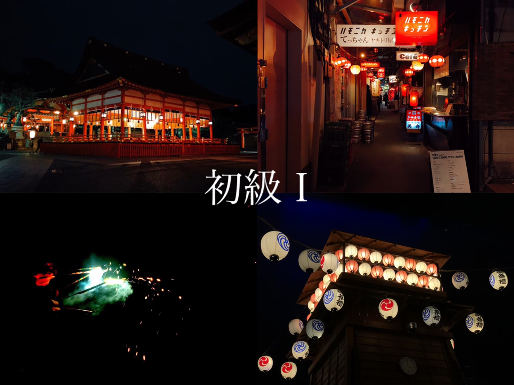
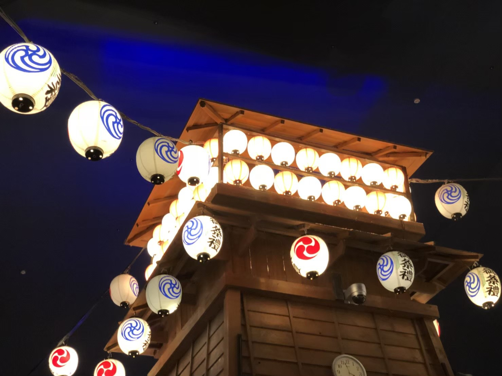
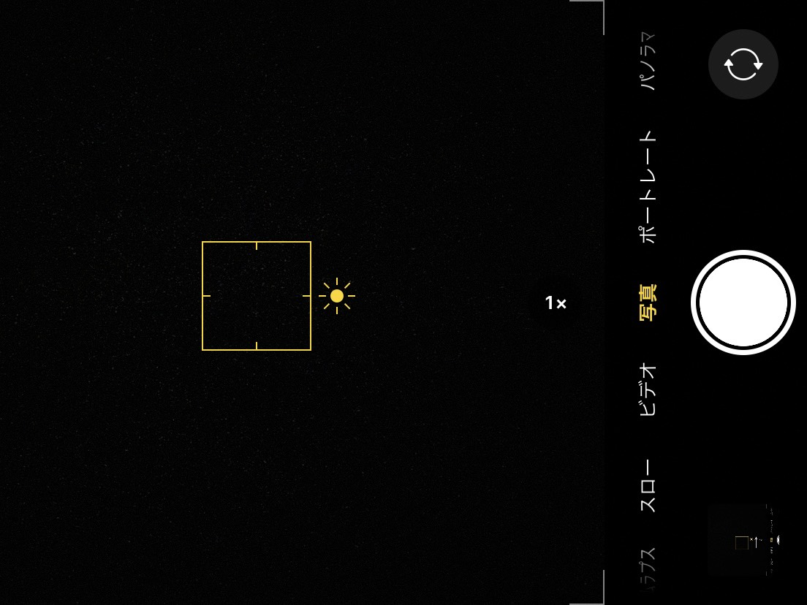
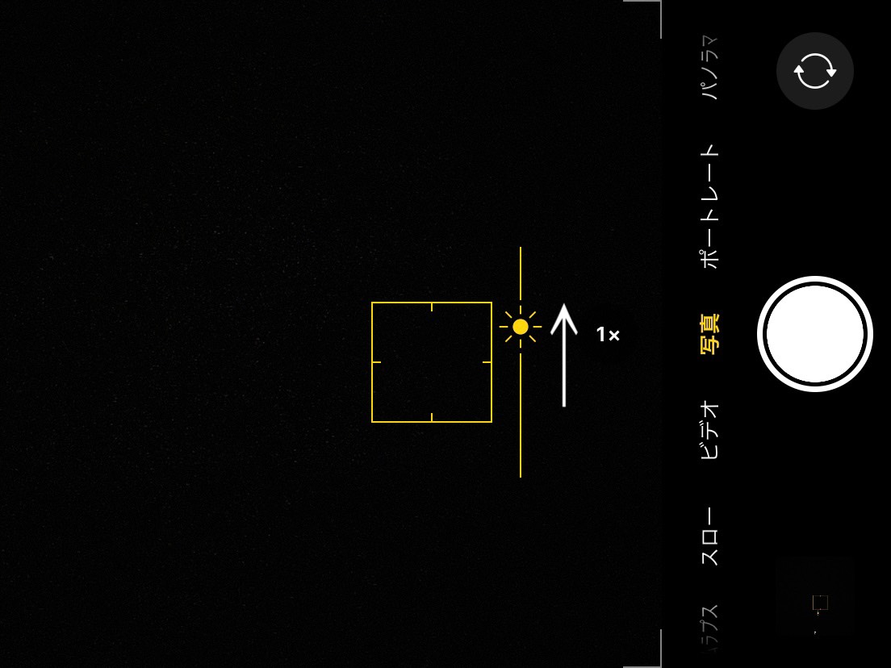
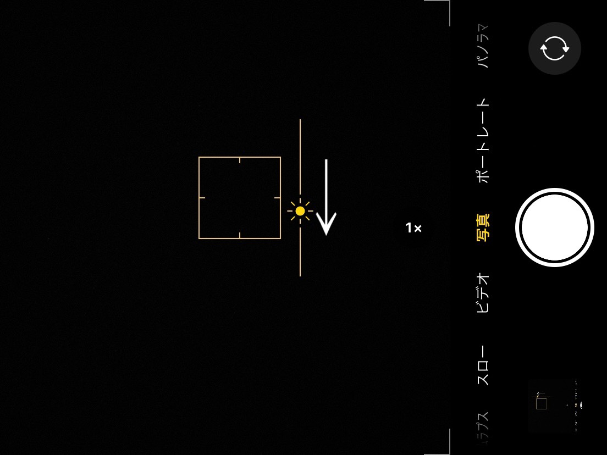
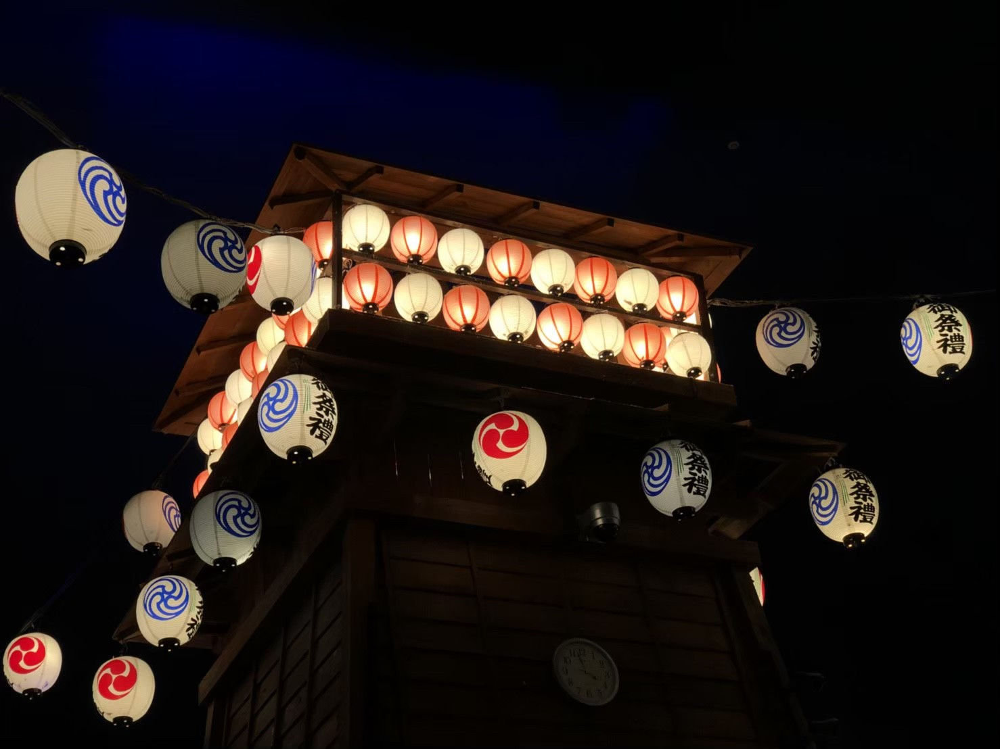

明暗マスター

皆さんこんにちは。Nanaです。
今回は、iPhoneのカメラ機能を使って夜や暗い場所でも綺麗に写真を取る方法を紹介します。

iPhoneで暗い場所の写真を撮ると、左写真のやぐら上部の提灯のような強い光は白飛びしてしまいます。
本来は、やぐら上部の提灯にも色があるのですが白飛びしてしまって、全然わかりません。
皆さんも、花火大会などで花火の写真が白飛びした経験あるのではないでしょうか。
では、白飛びしないようにするようにはどうしたら良いのでしょうか。

それでは、ここから実践していきましょう。皆さんiPhoneの準備はよろしいですか。
カメラを起動して、画面をどこでも良いのでタップしてください。
すると、左の写真のように☀マークがでてきたかと思います。

では、実際に左の写真のように☀マークを上に動かしてみましょう。
恐らく画面の光がどんどん明るくなっていっているのではないでしょうか。
皆さんお気づきかと思いますが、☀マークを上に動かすとより白飛びします。

それでは、逆に☀マークを下に動かしてみましょう。
光の強さが弱くなって、画面が鮮明になったのではないでしょうか
しかし、☀マークを下に下げすぎると全体が暗くなりすぎる時があるので注意してください。

ちなみに、この方法で先ほどのやぐらを撮影してみました。
しっかりやぐら上部の提灯の色が写っていますね。
iPhoneの基本的な機能ですが、意外と知られていないこの機能。
この機能を使いこなして是非、夜景などを手軽に綺麗に撮ってみてください。